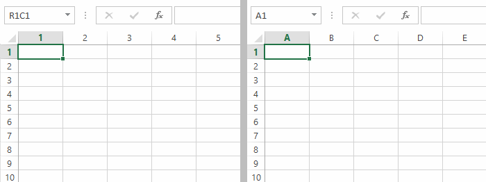
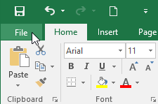
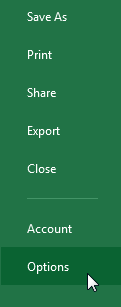
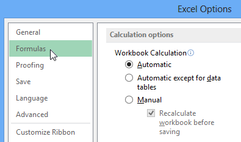

/en/excel/new-features-in-office-2019/content/
Mỗi bảng tính Excel đều chứahàngvàcột. Thông thường, các cột được xác định bằngchữ cái(A, B, C)và các hàng được xác định bằngsố (1, 2, 3). Trong Excel, đây được gọi là kiểuA1tham chiếu. Tuy nhiên, một số người thích sử dụng một phương pháp khác trong đó các cột cũng được xác định bằng số. Đây được gọi làkiểu tham chiếu R1C1****.
Trong ví dụ bên dưới, hình ảnh bên trái cósốtrên mỗi cột, nghĩa là nó đang sử dụng kiểu tham chiếuR1C1. Hình ảnh bên phải đang sử dụng kiểu tham chiếuA1.

Mặc dù kiểu tham chiếu R1C1 hữu ích trong một số trường hợp nhất định nhưng có thể bạn sẽ muốn sử dụng kiểu tham chiếu A1 trong hầu hết thời gian. Hướng dẫn này sẽ sử dụng kiểu tham chiếu A1. Nếu hiện đang sử dụng kiểu tham chiếu R1C1, bạn cầntắt nó.

2. Nhấp vàoTùy chọn.
3. Hộp thoạiTùy chọn Excelsẽ xuất hiện. Nhấp vàoCông thứcở bên trái hộp thoại.
4. Bỏ chọn hộp bên cạnhkiểu tham chiếu R1C1, sau đó nhấp vàoOK. Excel bây giờ sẽ sử dụng kiểu tham chiếu A1./en/excel/office-intelligent-services/content/